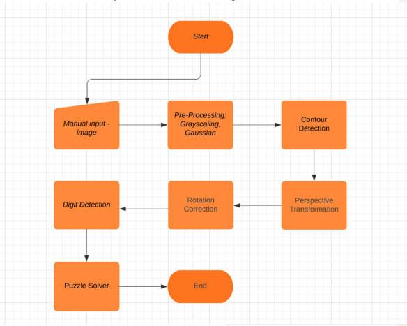
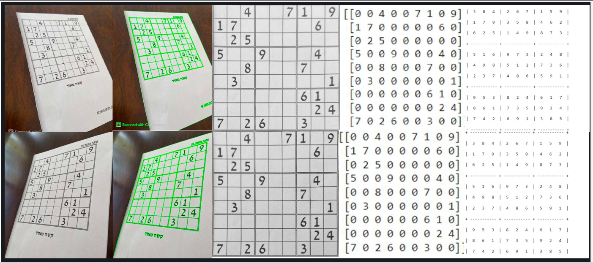

As computer science students, we're most fascinated by solving complicated problems, puzzles and riddles.
One such example for an interesting logical puzzle is the sudoku.
Sudoku is a popular puzzle game that involves placing numbers from 1 to 9 in a grid of 81 squares.
The grid is divided into 9 smaller squares, each containing 9 squares.
The objective of the game is to fill in the grid so that each row, each column, and each of the 9 smaller squares contains all of the numbers from 1 to 9 exactly once.
Sudoku puzzles come in varying levels of difficulty, and solving them requires logical thinking, pattern recognition, and sometimes trial and error.
Sudoku is one of the most famous logical puzzles, and as problem solving students, we chose to dive deep into this puzzle.
Our goal is to solve any sudoku within seconds, using an image solely.
Approach and Method
We used a flow chart to guide our implementation in order to achieve our goal:

Preprocessing:
In this step, the given image of the Sudoku puzzle is converted into grayscale to reduce color complexity. Gaussian blurring is applied to smooth the image and remove noise so that the edges of the puzzle can be detected more accurately.
Edge detection:
The Canny algorithm is used to detect edges in the preprocessed image. This algorithm identifies the boundaries between regions of contrasting pixel values.
Object detection:
boundaries of each object in the image are identified using contour detection. This step helps to identify the Sudoku board's location and size.
Board extraction:
The Sudoku board is extracted using its geometrical features. Since a Sudoku board has unique geometrical features, the board's corners can be detected, and the image can be cropped accordingly.
Perspective transformation:
The extracted image is transformed into a fixed size to make it easier to recognize the digits' locations. This is done using perspective transformation, which allows us to change the viewpoint of the image while maintaining the geometry of the objects in the image.
Image rotation:
At this point, the Sudoku board may be rotated, which can lead to incorrect digit recognition. Therefore, the image is rotated so that all the digits are aligned with the default axes.
Cell splitting:
The image is divided into smaller cells to isolate individual digits. This is done using the known size of the Sudoku board.
Digit recognition:
Using an OCR (optical character recognition) model, each cell is recognized and converted into a numerical digit. This information is then placed into a matrix.
Solving the puzzle:
The matrix of digits is sent to a Sudoku solver, which uses a backtracking algorithm to solve the puzzle.
Overall, this process combines computer vision and OCR techniques to extract and recognize the Sudoku puzzle's digits, enabling the program to solve the puzzle automatically.
Results

Project's Video
Do not touch. Here your project's video clip will be embedded by us...
Conclusions
In conclusion, we saw how concepts and ideas that are learnt in class are actually implemented and used in various scenarios.
This project was interesting, hard but yet very satisfying, and we are very happy to end up with these results.